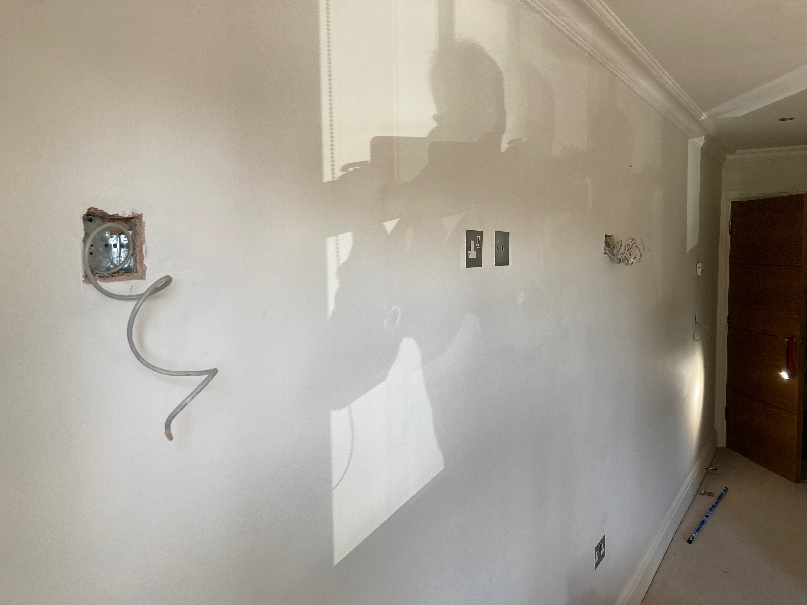

Using the estate agent plan for basic dimensions and layout:

Flooring:
-
Bedrooms - to be replaced carpet
- The replacent date is the 3rd July
- Aleady cut away from wall
- No need to protect
- Sitting / Dining Room - 3mm deep real wood surface laminate
- All other areas - travertine stone tiling
Wall surfaces:
- Plainted plaster everywhere to be decoorated.
- The exceptions are the two wet rooms that are marble, which are out scope. The white wood door surrounds remain in scope.
Lighting and other ceiling fittings:
- Spotlights everywhere. The detais are well known to me as I have replaced a lot of the bulbs and electronics, and it is now 100% LED.
- Lounge, kitchen and master bedroom spotlights: easy to standoff spring loaded brushed metal mounts. These take GU5.3 MR16 bulbs.
- Second bedroom and hallway spotlights: these look the similar to the above, but they are actually enclosed holders for Aurora AU GUF4011LED 240V SGU10 that I can't see how to release.
- Wet room spotlights: easy to standoff spring loaded white plastic IP65 rated. These take GU5.3 MR16 bulbs.
- Central extractor duct covers in the wet rooms and kitchen: the pop off the base plate that are themselves screwed in the ceiling.
- Hallway smoke alarm: wired, but the unit quick releases from the base plate.
- Hallway PIR sensors: no idea if it can be released.
Doors:
- Dark stain walnut wooden fire doors everywhere with white wood surrounds
- Only the door surrounds are in scope for the decorating work
- There are similar finish pocket doors for the kitchen
Priorities and timescales
- The priority rooms are the two bedrooms, to complete the decorating work before the carpet fitting on 3rd July. Subsequently a heavy bed will be delivered to the master bedroom on the 9th July. Given the carpet fitting will fill the air with fibres and fluff, the paint will have to be fully cured before the fitting date so fluff does not stick to it.
- The timescales on other rooms are currently open.
-
There is a wider scope of building work described elsewhere. Though it
would have been ideal, it is not realistic for that to be completed prior to general decorating
work.
- I am therefore open to two passes of decorating in the affected rooms, before and after the other works. With respect to the urgent room.
- You may wish to pitch for the just the initial pass throughout the entitire flat, or both that, and the making good second pass at a later date.
- Though they are different trades, to straight decorating, if you can help with the wider works please tell me.
-
The other works' scope for the master bedroom has not been finalised yet. A picture from
before the carpet was cut away for some context. There are normally, near flush, brushed
metal blanks in a similar style to the power socket that can be seen. These have been
removed to identify the wiring.:

- The simplest option for the would be keep the blanks, but the most likely outcome is that the extraneous sockets will be buried. If I go that way, feel free to pitch for doing that, that would be great, but given the timescale I would do the first pass bury myself, so all that is needed is any second pass decorating prep if needed.
- Finalising that choice, is a top priority. I will update this document accordingly as sooon as the decision is made and notifiy any pitching contractors.
- Given the timescales I will keep chipping away at prep while waiting to get someone on site. As it a colour scheme that will show surface blemishes you should expect to do your own additional prep to achieve a high finish.
Colours and finish
- The colour is very simplementation, pure brilliant white everywhere.
- As it a colour scheme that will show surface blemishes you should expect to do your own additional prep to achieve a high finish. I am not a fan of lining paper, but I am prepared to discuss it.
-
Surface finishes per room:
- Kitchen - walls: "(Easycare) Kitchen"
- Kitchen - ceiling: "(Easycare) Kitchen"
- Sitting / Dining Room - walls: "(Easycare) Washable & Tough"
- Sitting / Dining Room - ceiling: "Walls & Ceilings (Vinyl) Matt"
- Bedroom - walls: "(Easycare) Washable & Tough"
- Bedroom - ceiling: "Walls & Ceilings (Vinyl) Matt"
- Wet rooms - ceiling: "(Easycare) Bathroom"
- Skirting - Satinwood
- Door surrounds - Satinwood
-
Brand
- As I am being boring, we have a lot of choice.
- I want to be able to easily source touch up materials in years to come.
- You will be able to get trade prices, but at domestic prcing I'm open to own brands, subject to your advice regarding quality.
- Wickes is just under a mile straight down the hill